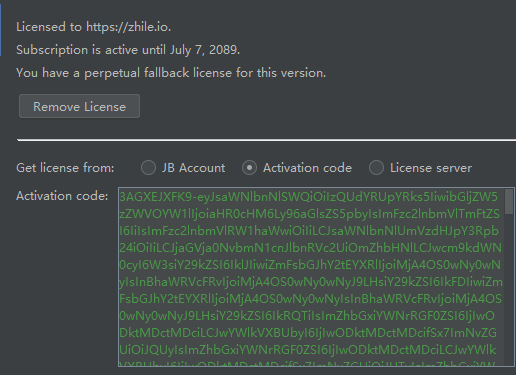

pycharm破解流程
感谢zhile.io博主
关注本网站的公众号 获取jetbrains-agent的最新链接。直接将下载下来的文件拖到pycharm中。
这里我分享的2020.1.1版本的agent，地址：
链接：https://pan.baidu.com/s/12BWaG4I6sMP9PfiOmCOu3A 提取码：3rhg
复制这段内容后打开百度网盘手机App，操作更方便哦
当然pycharn软件是全新安装的（为了避免错误）
安装完后，可以自定义Activation code，前提是超过一年的github账号。
地址为：https://zhile.io/custom/license
输入激活码即可。
